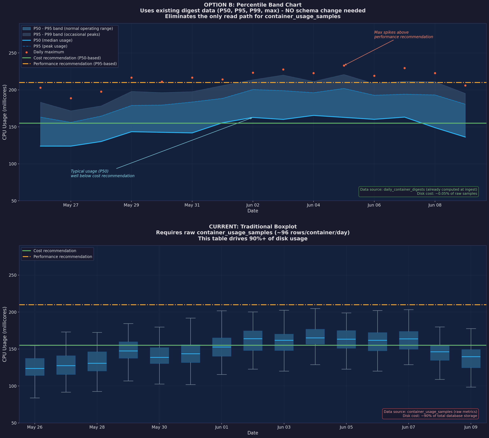

Usage Percentile-Band Plots¶
Percentile-band plots replace the traditional boxplots that were previously used to visualize container resource usage over time. They provide a richer, more storage-efficient view of workload behavior and how recommendations compare to historical patterns.
Availability
Percentile-band plots are currently available for container recommendations. Support for additional recommendation types is planned — see Future applicability below.
Why we replaced boxplots¶
Traditional boxplots required retaining every raw 15-minute usage sample
(container_usage_samples) — roughly 96 rows per container per day. This
table consumed ~90% of total database storage and was the only remaining
read path for raw samples.
Percentile-band plots use daily digest summaries (daily_container_digests)
that are already computed during ingestion. Each digest row stores
p50, p95, p99, and max for a metric on a given day — one row per
container per metric per day, at ~0.05% of the raw sample disk cost.
This change:
- Eliminates the need for long-term raw sample retention — samples are kept
only for
ROS_SAMPLE_RETENTION_DAYS(default 7) for real-time analysis, then pruned. Digests are retained for the fullROS_DIGEST_RETENTION_DAYSperiod (default 45). - Removes the only read path for
container_usage_samples— the table can shrink by orders of magnitude. - Provides richer distribution information — four percentile bands vs three quartiles.
See ADR-0292 for the full decision record.
How percentile-band plots work¶
Each daily digest stores four summary statistics per metric (CPU usage, memory usage, etc.):
| Statistic | Meaning |
|---|---|
| p50 (median) | Typical usage — half of observations fall below this |
| p95 | Normal operating ceiling — covers 95% of usage |
| p99 | Spike threshold — only 1% of observations exceed this |
| max | Absolute peak observed that day |
The chart renders these as shaded bands over time:
| Band | Color | Interpretation |
|---|---|---|
| p50–p95 | Solid fill | Normal operating range |
| p95–p99 | Lighter fill | Occasional peaks |
| p99–max | Dots / markers | Rare spikes |
Recommendation lines are overlaid on the bands:
- Cost recommendation (solid line) — based on p50 (median usage), optimizes for cost savings
- Performance recommendation (dashed line) — based on p95, ensures headroom for peak workloads
Visual comparison¶
The image below compares the new percentile-band chart (top) with the legacy boxplot (bottom) for the same CPU usage data:

Key observations:
- The band chart (top) shows continuous usage distribution with clear shading for typical vs peak ranges. The p50 line reveals that typical usage is well below the cost recommendation, while daily max spikes (orange dots) occasionally exceed the performance recommendation.
- The boxplot (bottom) shows the same data as discrete daily boxes with whiskers. While familiar, each box requires ~96 raw sample rows to compute, and the quartile boundaries provide less granularity than percentile bands.
- Both charts show the same recommendation lines, but the band chart makes the relationship between usage patterns and recommendations more intuitive.
API response¶
Percentile-band plot data is returned on the detail endpoint only (not on list responses, per ADR-0293):
The plots_data field contains per-term arrays of daily digest values:
{
"plots_data": {
"short_term": {
"plots_data": [
{
"date": "2026-06-01",
"cpu_usage": { "p50": 0.12, "p95": 0.18, "p99": 0.22, "max": 0.25 },
"memory_usage": { "p50": 134217728, "p95": 201326592, "p99": 234881024, "max": 268435456 }
}
]
},
"medium_term": { "plots_data": [...] },
"long_term": { "plots_data": [...] }
}
}
Each entry provides the four percentile values for that day's digest. The UI renders these as the shaded bands described above.
Data retention model¶
| Data | Retention | Purpose |
|---|---|---|
Raw samples (container_usage_samples) |
ROS_SAMPLE_RETENTION_DAYS (default 7) |
Real-time analysis, fresh digest computation |
Daily digests (daily_container_digests) |
ROS_DIGEST_RETENTION_DAYS (default 45) |
Percentile-band plots, weighted percentile recommendations |
When the user changes recommendation terms (e.g., extends long_term from 90
to 180 days), recommendations are recalculated from digest data — no raw samples
are needed. The digests contain all the statistical information required for
percentile sizing.
Generating test data¶
Percentile-band charts need multi-day data with per-hour usage variation.
NISE produces this when you generate ROS container CSVs with --ros-ocp-info.
How NISE creates variation¶
Each hour in ocp_ros_usage.csv gets randomized CPU and memory usage via
generate_randomized_ros_usage() in nise. For each container hour, nise
derives avg, min, and max from uniform random distributions (for example,
avg ±5% of a YAML-specified value, or 10–100% of the limit when unspecified).
That hourly spread is what the ingestion pipeline aggregates into daily
p50/p95/p99/max digests.
Avoid flat bands: do not set constant_values_ros_ocp: true in the static
YAML (or pass nise's --constant-values-ros-ocp flag). Constant mode gives every
hour identical values, so all four percentiles collapse to the same number and
the chart shows a flat line instead of shaded bands.
Minimal nise command¶
Use a static YAML with a date range of at least 7 days (longer is better for
medium_term plots). Edit start_date / end_date in the file before running:
nise report ocp \
--static-report-file examples/ros_ocp/ocp_static_data.yml \
--ocp-cluster-id <CLUSTER_UUID> \
--ros-ocp-info \
--write-monthly
See nise/examples/ros_ocp/ocp_static_data.yml for a full fixture. Upload the
resulting tarball through ingress (or cost-onprem E2E helpers) so ros-ocp-backend
can ingest it.
Data pipeline¶
nise (hourly ocp_ros_usage.csv)
→ ros-processor ingest
→ container_usage_samples
→ daily_container_digests (p50, p95, p99, max per metric per day)
→ detail API plots_data
Raw samples are retained only for ROS_SAMPLE_RETENTION_DAYS (default 7);
plots read from digests after that window.
Verifying plots_data¶
After ingestion completes, fetch a container detail response and inspect
plots_data:
curl -s -H "x-rh-identity: $IDENTITY" \
"http://localhost:8000/api/cost-management/v1/recommendations/openshift/<recommendation-id>" \
| jq '.recommendations.recommendation_terms.short_term.plots.plots_data[:3]'
Confirm that cpu_usage and memory_usage entries across multiple days show
different p50, p95, p99, and max values (with p50 ≤ p95 ≤ p99 ≤ max
on each day). Identical values on every day indicate constant or insufficiently
varied test data.
Future applicability¶
The digest + percentile-band architecture is designed to be reusable across recommendation types. Percentile-band plots are planned for:
| Recommendation type | Status | Notes |
|---|---|---|
| Container (CPU/memory) | Shipped | daily_container_digests → detail API |
| VM (vCPU/memory) | Planned | Same shape as container; would use daily_vm_digests |
| Namespace (quota utilization) | Planned | Shows how close to quota limits the namespace ran over time |
| Java/JVM | Planned | Heap, GC pause, thread pool utilization distributions |
| Node (consolidation) | Planned | Per-node CPU/memory utilization bands justify consolidation decisions — low p95 = safe to consolidate, high p99 = risky despite low median |
| MachineSet | Not applicable | Fleet aggregation endpoint; no per-resource time-series |
As new recommendation types add digest pipelines, they will automatically gain percentile-band plot support on their detail endpoints.
Related documentation¶
| Document | Scope |
|---|---|
| Container Right-Sizing | Full container recommendation lifecycle |
| Recommendation Engines | How percentiles drive sizing |
| Decay Weights | How recency weighting applies to digests |
| ADR-0292 | Decision record: boxplots → percentile-band plots |